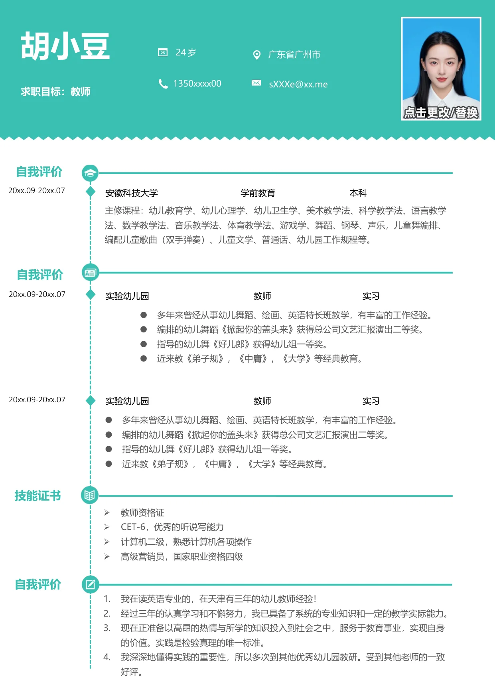

胡小豆
求职目标：教师
自我评价
20xx.09-20xx.07
自我评价
20xx.09-20xx.07
技能证书
自我评价
安徽科技大学 学前教育 本科
主修课程：幼儿教育学、幼儿心理学、幼儿卫生学、美术教学法、科学教学法、语言教学
法、数学教学法、音乐教学法、体育教学法、游戏学、舞蹈、钢琴、声乐，儿童舞编排、
编配儿童歌曲（双手弹奏）、儿童文学、普通话、幼儿园工作规程等。
实验幼儿园 教师 实习
多年来曾经从事幼儿舞蹈、绘画、英语特长班教学，有丰富的工作经验。
编排的幼儿舞蹈《掀起你的盖头来》获得总公司文艺汇报演出二等奖。
指导的幼儿舞《好儿郎》获得幼儿组一等奖。
近来教《弟子规》，《中庸》，《大学》等经典教育。
20xx.09-20xx.07
实验幼儿园 教师 实习
多年来曾经从事幼儿舞蹈、绘画、英语特长班教学，有丰富的工作经验。
编排的幼儿舞蹈《掀起你的盖头来》获得总公司文艺汇报演出二等奖。
指导的幼儿舞《好儿郎》获得幼儿组一等奖。
近来教《弟子规》，《中庸》，《大学》等经典教育。
1.
我在读英语专业的，在天津有三年的幼儿教师经验！
2.
经过三年的认真学习和不懈努力，我已具备了系统的专业知识和一定的教学实际能力。
3.
现在正准备以高昂的热情与所学的知识投入到社会之中，服务于教育事业，实现自身
的价值。实践是检验真理的唯一标准。
4.
我深深地懂得实践的重要性，所以多次到其他优秀幼儿园教研。受到其他老师的一致
好评。
•
教师资格证
•
CET-6，优秀的听说写能力
•
计算机二级，熟悉计算机各项操作
•
高级营销员，国家职业资格四级
广东省广州市
24 岁
1350xxxx00
sXXXe@xx.me